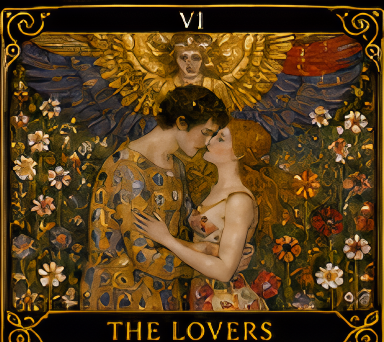
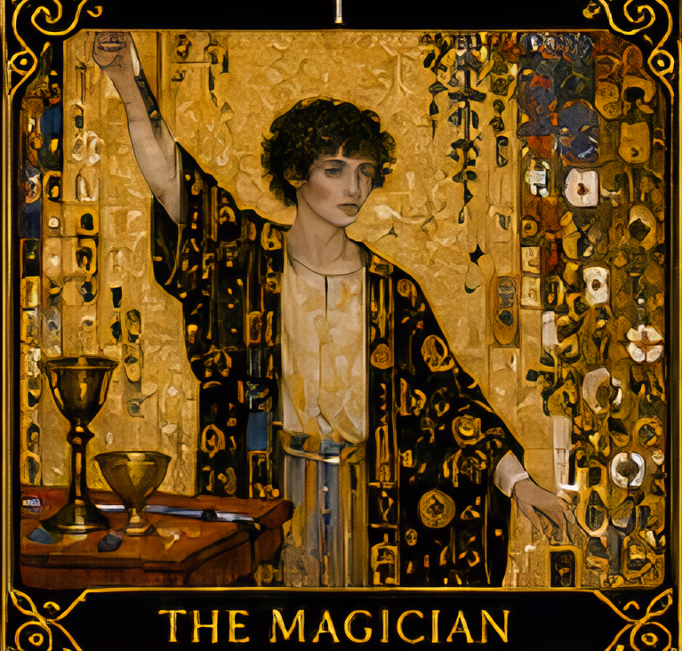
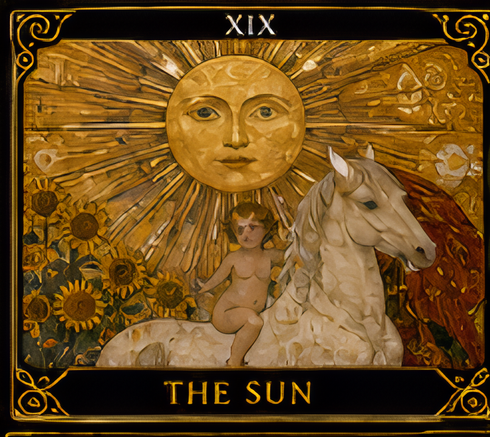

오늘,
당신의 시간은 어디를 향하고 있나요?
당신이 세상에 도착한 날을 적어주세요.
오늘의 질문이 시작되는 시간의 좌표가 됩니다.
* 입력한 생년월일과 질문은 이번 해석에만 참조되며 서버에 저장되지 않습니다.
지금 가장 마음에 머무는 질문은 무엇인가요?
정답을 묻기보다,
당신이 정말 마주하고 싶은 것을 적어주세요.
질문을 카드에 봉인하는 시간
아래 봉인 버튼을 잠시 길게 누르고 계세요.
✨ 당신의 질문이 카드에 머물렀습니다.



잠시 해석하지 말고, 세 그림을 바라보세요.
가장 먼저 눈에 들어온 인물의 시선, 자세, 혹은 문양을 고요히 느껴봅니다.
어느 그림에서 시선이 가장 오래 멈추었나요?
위 3장의 카드 그림 중 시선이 머문 그림을 직접 터치해주세요.
지금 당신을 흔드는 것은 실제 사건보다, 아직 확인되지 않은 가능성을 머릿속에서 크게 키우는 마음입니다.
첫 번째 그림의 닫힌 형태가 두 번째 그림에서 수면의 부분 반사로 흐려지다가, 세 번째 그림에서 정면을 향한 수직선으로 다시 또렷해집니다.
질문에 대해 판단을 흐리는 것은 자원 부족이 아니라 확인되지 않은 두려움입니다. 직감을 무시할 필요도, 직감만 믿을 필요도 없이 알고 있는 사실과 추측을 분리하십시오.
선택하신 그림에서 확인되는 명확한 경계선이 현재 마음속 구분이 필요한 지점을 지목합니다.
결정하려는 문제를 세 줄(내가 확인한 사실 / 들은 말 / 불안해서 상상한 결과)로 나눠 적으세요. 세 번째 줄을 사실처럼 취급하지 않는 것이 오늘 할 일입니다.